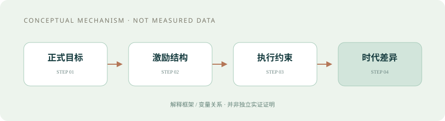

制度与权力 · 研究提纲 · 2026-11-21 整理
制度激励：卫所、人民公社与执行偏差
以组织约束、退出条件和信息差为比较变量，避免跨时代类比失真。
证据状态：研究提纲。 这是一份研究问题与候选解释清单；源材料尚不足以支持已完成研究的结论。 机制示意仅辅助理解，不是数据图或因果识别。

概念图：正式目标 → 激励结构 → 执行约束 → 时代差异；非实证统计数据状态：历史研究框架。 当前可见记录仅有“明朝卫所制度”“人民公社”主题，不能凭标题补出历史论证。
用于比较的变量包括：正式目标；土地、劳动和公共资源配置；能否退出或改变身份；投入与产出怎样计量和分配；中央与基层之间的信息差；组织面对人口、市场和财政变化时的调整能力。两者的年代、产权安排和政治目标差异显著，不能因某个激励问题相似就宣布制度等同。
研究时问：制定者期望的行为与成员面对实际约束时的选择是否相同？谁承担未计入的成本？基层反馈能否进入规则修订？官方材料和私人记录分别覆盖哪些群体？历史框架 · 资源入口。